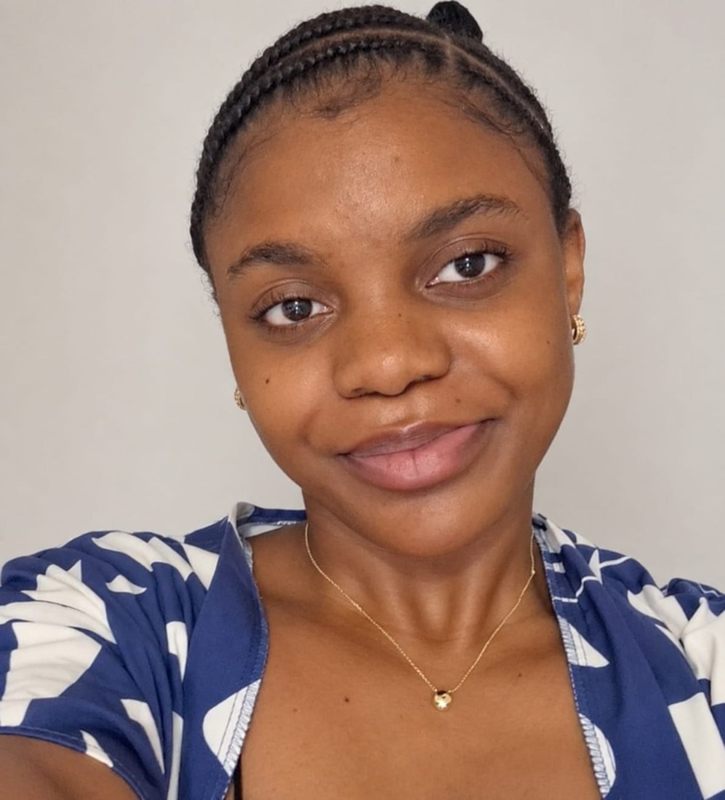

Py
Python
Bases de programmation et premiers exercices.
NIVEAU : DÉBUTANT
Moi, c'est Eloisa LEUDJEU ! Étudiante en deuxième année du cycle préparatoire intégré à 3iL Ingénieurs, je développe mes premières compétences en programmation et en bases de données. Mon ambition : devenir Data Quality & Governance Analyst, pour contribuer à rendre les données plus fiables, cohérentes et utiles.

Je veux comprendre comment garantir des données fiables et bien organisées, étape par étape.
« Every expert was once a beginner. My Data journey starts here. »
Un aperçu honnête des technologies que je découvre et commence à pratiquer.
Bases de programmation et premiers exercices.
Notions de bases de données et de requêtes.
Première prise en main et manipulation de tableaux.
Mon objectif est de devenir Data Quality & Governance Analyst. Voici les sujets que je souhaite découvrir et approfondir, et non des expertises que je prétends déjà maîtriser.
Comprendre comment repérer les erreurs, les doublons et les valeurs manquantes.
Découvrir les règles, rôles et processus qui encadrent l'utilisation des données.
Progresser en SQL, Python et Excel pour explorer et vérifier des données.
Ces espaces seront remplacés par mes vrais projets et exercices. Aucun projet fictif n'est présenté comme réalisé.
Décrire ici un programme ou exercice réalisé, son objectif et les notions utilisées.
PythonProjet à ajouter
Présenter une base de données étudiée et quelques requêtes réalisées.
SQLProjet à ajouter
Montrer un tableau, une formule ou un graphique créé pendant la formation.
ExcelProjet à ajouter
3iL Ingénieurs · Formation en cours
Développement des fondamentaux scientifiques et informatiques.
Je recherche un stage de 6 à 12 semaines maximum dans le domaine de la Data. Je suis également intéressée par une éventuelle alternance en Data Quality & Governance, pour développer mes compétences dans la fiabilité, la qualité et la gouvernance des données. Je suis motivée à apprendre et à contribuer à des projets concrets.